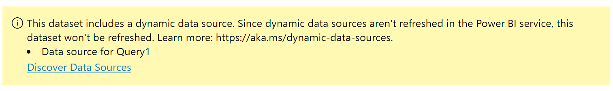

I’m pulling data from GitHub Codeowners into a Power BI report. All was dandy locally, but refresh failed on the PBI service with this:

This dataset includes a dynamic data source. Since dynamic data sources aren’t refreshed in the Power BI service, this dataset won’t be refreshed. Learn more: https://aka.ms/dynamic-data-sources.
Initially I had this type of query:
(langText as text, langCode as text) =>
let
Source = Table.FromColumns({Lines.FromBinary(Web.Contents(Text.Format("https://github.com/Azure/azure-sdk-for-#{0}/blob/main/.github/CODEOWNERS", {langCode})), null, null, 65001)}),
I was dynamically building the URL inside of a custom function, #{0} gets replaced by the langCode parameter.
All worked well locally, but the Power BI service doesn’t refresh data source with dynamic URLs (and other things, more info here: https://aka.ms/dynamic-data-sources).
So, I was forced to modify my custom function to accept the entire URL as a parameter instead of just the langCode
Here’s the updated version - that still doesn’t work.
(langText as text, url as text) =>
let
Source = Table.FromColumns({Lines.FromBinary(Web.Contents(url), null, null, 65001)}),
I was under the impression that Web.Contents would refresh if url was a variable…but apparently it needs to be an inline string.
So I had to rethink my whole approach.
Here’s what I ended up with:
The Function
(langText as text, table as table) =>
let
Source = table,
#"Filtered Rows" = Table.SelectRows(Source, each not Text.StartsWith([Column1], "#")),
#"Filtered Rows1" = Table.SelectRows(#"Filtered Rows", each ([Column1] <> "")),
#"Split Column by Delimiter" = Table.SplitColumn(#"Filtered Rows1", "Column1", Splitter.SplitTextByEachDelimiter({" "}, QuoteStyle.Csv, false), {"Column1.1", "Column1.2"}),
#"Changed Type" = Table.TransformColumnTypes(#"Split Column by Delimiter",{{"Column1.1", type text}, {"Column1.2", type text}}),
#"Renamed Columns" = Table.RenameColumns(#"Changed Type",{{"Column1.1", "Path"}}),
#"Added Custom" = Table.AddColumn(#"Renamed Columns", "Language", each langText),
#"Renamed Columns1" = Table.RenameColumns(#"Added Custom",{{"Column1.2", "Codeowners"}}),
#"Trimmed Text" = Table.TransformColumns(#"Renamed Columns1",{{"Codeowners", Text.Trim, type text}}),
#"Split Column by Delimiter1" = Table.ExpandListColumn(Table.TransformColumns(#"Trimmed Text", {{"Codeowners", Splitter.SplitTextByDelimiter("@", QuoteStyle.Csv), let itemType = (type nullable text) meta [Serialized.Text = true] in type {itemType}}}), "Codeowners"),
#"Changed Type1" = Table.TransformColumnTypes(#"Split Column by Delimiter1",{{"Codeowners", type text}}),
#"Filtered Rows2" = Table.SelectRows(#"Changed Type1", each ([Codeowners] <> null and [Codeowners] <> ""))
in
#"Filtered Rows2"
The Query
let
net = GetCodeowners(".NET", Table.FromColumns({Lines.FromBinary(Web.Contents("https://raw.githubusercontent.com/Azure/azure-sdk-for-net/main/.github/CODEOWNERS"))})),
java = GetCodeowners("Java", Table.FromColumns({Lines.FromBinary(Web.Contents("https://raw.githubusercontent.com/Azure/azure-sdk-for-java/main/.github/CODEOWNERS"))})),
python = GetCodeowners("Python", Table.FromColumns({Lines.FromBinary(Web.Contents("https://raw.githubusercontent.com/Azure/azure-sdk-for-python/main/.github/CODEOWNERS"))})),
js = GetCodeowners("JavaScript", Table.FromColumns({Lines.FromBinary(Web.Contents("https://raw.githubusercontent.com/Azure/azure-sdk-for-js/main/.github/CODEOWNERS"))})),
android = GetCodeowners("Android", Table.FromColumns({Lines.FromBinary(Web.Contents("https://raw.githubusercontent.com/Azure/azure-sdk-for-android/main/.github/CODEOWNERS"))})),
go = GetCodeowners("Go", Table.FromColumns({Lines.FromBinary(Web.Contents("https://raw.githubusercontent.com/Azure/azure-sdk-for-go/main/.github/CODEOWNERS"))})),
c = GetCodeowners("C", Table.FromColumns({Lines.FromBinary(Web.Contents("https://raw.githubusercontent.com/Azure/azure-sdk-for-c/main/.github/CODEOWNERS"))})),
cpp = GetCodeowners("CPP", Table.FromColumns({Lines.FromBinary(Web.Contents("https://raw.githubusercontent.com/Azure/azure-sdk-for-cpp/main/.github/CODEOWNERS"))})),
ios = GetCodeowners("iOS", Table.FromColumns({Lines.FromBinary(Web.Contents("https://raw.githubusercontent.com/Azure/azure-sdk-for-ios/main/.github/CODEOWNERS"))})),
all = Table.Combine({net, java, python, js, android, go, c, cpp, ios})
in
all
The Results
Here’s the Power BI report that allows us to easily find codeowners by service, owner, or lang.
Troubleshooting
Make sure you go to the Dataset, then find “Data source credentials” and make sure you don’t have any "x"es next to “edit credentials”. Even if the endpoint is public you need to explicitly tell Power BI that by clicking on the Edit credentials link.
Lesson learned is don’t use a dynamic URL when using Web.Contents, just put the whole url AS A STRING in there and it will refresh.
Jon